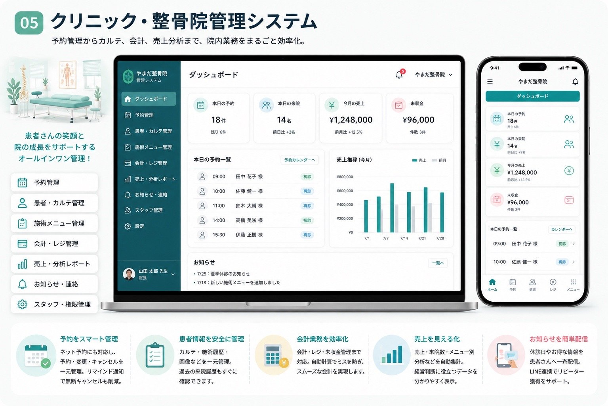

結論｜クリニック・整体院のAI活用は、診療・施術ではなく予約・受付業務から始めるのがおすすめです
先に結論からお伝えすると、クリニック・整体院がAIを活用する際は、診療や施術そのものではなく、予約管理・受付業務・顧客情報管理といった、診療・施術の前後にある業務から始めることをおすすめします。
診断や治療方針の判断は、引き続き医師・施術者が行うものであり、AI・業務アプリがこれらを代替することはありません。今回ご紹介する仕組みは、予約対応や受付、リマインド連絡など、診療・施術以外の業務を効率化するためのものです。
すでに使っている予約サービスで十分に対応できる業務があれば、無理に新しいシステムへ置き換える必要はありません。また、医療機関と整体院では、扱う情報や必要な機能が異なります。まずは自院・自店のどこに手間がかかっているかを整理するところから始めてみてください。
クリニック・整体院でAIが注目される理由
クリニックや整体院では、診療・施術に加えて、予約対応、受付業務、顧客情報管理、リマインド連絡など、さまざまな業務が発生します。電話対応に追われることで、受付スタッフの負担が大きくなることも少なくありません。
予約情報と顧客情報(カルテや連絡先など)が別々に管理されていると、確認や入力の手間が増えます。また、予約のリマインド連絡を手作業で行っていると、都度の対応に時間がかかります。
近年は、こうした診療・施術以外の業務に特化した業務アプリやAIツールが増えており、大がかりなシステムを導入しなくても、予約・受付まわりの業務だけを効率化できる選択肢が広がっています。ただし、すでに予約システムを導入している場合、その機能で十分に対応できるのであれば、無理に新しいシステムを導入するよりも、既存のサービスを活用する方が合理的です。
なお、医療機関と整体院では、取り扱う情報の性質や求められる機能が異なります。医療機関では特に、個人情報・健康情報の取り扱いについてより慎重な検討が必要です。
クリニック・整体院でよくある業務上の課題
具体的な活用方法を見る前に、クリニック・整体院の現場でよく聞かれる業務上の課題を整理しておきましょう。
予約の電話対応に受付の手間が取られる
電話での予約受付は、診療・施術の合間に対応する必要があり、受付スタッフの負担になりやすい業務です。電話対応そのものを軽減する方法としてはAI電話とは？仕組み・料金・導入メリットもご参照ください。
予約と顧客情報の管理が分かれている
予約状況と顧客情報(連絡先や来院・来店履歴など)が別々の場所で管理されていると、確認のたびに複数の場所を見る必要があります。
リマインド連絡を手作業で行っている
予約日が近づいた際のリマインド連絡を、電話やメールで一件ずつ行っていると、時間がかかるだけでなく、対応漏れが起きることもあります。
キャンセルや変更の対応に手間がかかる
キャンセルや予約変更が発生するたびに、予約表の更新や関係者への連絡が必要になり、対応に追われることがあります。
クリニック・整体院でAIを活用できる業務
前述のような課題に対して、AI・業務アプリは次のような業務で活用できます。診療・施術そのものには関わらず、その前後にある業務を効率化するための仕組みとしてご活用いただけます。
予約管理
電話予約とオンライン予約の情報を1つの画面にまとめることで、確認の手間を減らし、予約状況を把握しやすくすることを目指せます。
受付管理
来院・来店時の受付対応を効率化する仕組みを取り入れることで、受付スタッフの負担を減らせる可能性があります。
リマインド通知
予約日が近づくとLINEなどで自動的にお知らせが届く仕組みを取り入れることで、手作業での連絡を減らしやすくなります。
顧客情報管理
連絡先や来院・来店履歴などの情報を一元管理することで、確認にかかる手間を減らしやすくなります。
問い合わせ対応
営業時間やアクセスなど、よくある問い合わせへの案内を整えることで、電話対応の負担を減らせる可能性があります。
スタッフ共有
予約状況やスタッフへの連絡事項をアプリ上で共有することで、情報共有をスムーズにすることを目指せます。
売上集計
日々の売上をダッシュボード形式で確認できるようにすることで、集計にかかる手間を減らせる可能性があります。
シフト管理
スタッフの希望シフトの提出・調整をアプリ上で行えるようにすることで、シフト作成にかかる時間を減らせる可能性があります。
| 業務 | 現在の管理方法 | 業務アプリでできること | 目指せる変化 |
|---|---|---|---|
| 予約管理 | 電話・紙・予約サイト | 予約情報の一覧化・通知 | 確認漏れを防ぎやすい |
| 受付管理 | 手作業・口頭対応 | 受付対応の効率化 | 受付の負担を減らしやすい |
| 顧客情報管理 | 紙のカルテ・Excel | 連絡先・来院履歴の一元管理 | 確認しやすい |
| リマインド | 電話・手作業 | LINE等での自動通知 | 連絡の手間を減らしやすい |
| シフト管理 | 紙・LINE・Excel | 希望提出・調整の一元管理 | 調整作業を減らしやすい |
具体的なAI活用例
掲載している画面・機能は、導入方法をご紹介するための活用例です。
予約管理アプリ

- 患者様・利用者様がスマートフォンから予約
- 受付がパソコンで予約状況を確認・調整
- 電話予約との併用
- 予約変更・キャンセルの管理
電話対応の負担を減らし、予約状況を確認しやすい状態を目指します。
顧客情報管理システム
- 連絡先・来院来店履歴の一元管理
- 予約履歴の確認
- スタッフ間での情報共有
- スマートフォンからの確認
顧客情報の確認にかかる手間を減らし、受付対応をスムーズにすることを目指します。
LINEリマインド連携
- 予約日が近づいた際の自動通知
- 予約内容の確認・変更案内
- 手作業での連絡の削減
- 既存のLINE公式アカウントとの連携
リマインド連絡の手間を減らし、来院・来店忘れの防止につなげることを目指します。
AI導入で期待できる変化
予約管理や受付、リマインド連絡などにAI・業務アプリを取り入れることで、次のような変化が期待できます。効果の度合いは業態や規模によって異なるため、あくまで一般的な傾向としてご参考ください。
電話対応にかかる時間を減らしやすい
オンライン予約と電話予約を併用することで、受付の電話対応にかかる時間を減らしやすくなります。
予約・顧客情報の確認をしやすくなる
予約と顧客情報を1つの画面で確認できるようにすることで、確認にかかる手間を減らしやすくなります。
リマインド連絡の手間を減らしやすい
手作業での連絡を減らし、来院・来店忘れの防止につなげやすくなります。
受付業務の負担を減らしやすい
予約・変更・キャンセル対応をスムーズにすることで、受付スタッフの負担を減らせる可能性があります。
診療・施術に集中しやすい時間を確保しやすくなる
予約・受付まわりの業務にかかる時間や確認の手間が減ることで、診療・施術によりしっかり向き合いやすくなることを目指せます。
AI導入前に確認したい注意点
AI・業務アプリの導入を検討する際は、良い面だけでなく、事前に確認しておきたい点もあります。
診断や治療判断をAIへ任せない
今回ご紹介するAI・業務アプリは、診断や治療方針の判断を行うものではありません。これらの判断は、引き続き医師・施術者が行うものであり、AI・業務アプリが代替することはありません。
医療行為の代替と表現しない
予約管理や受付業務の効率化は、医療行為そのものを代替するものではありません。診療・施術以外の業務を効率化するための仕組みとしてご理解ください。
個人情報や健康情報を慎重に扱う
患者様・利用者様の個人情報や健康に関する情報は、特に慎重な取り扱いが必要です。どのように保存・管理されるのか、導入前に十分に確認することが重要です。
既存予約サービスで足りるか確認する
すでに予約システムを導入している場合、その機能で十分に対応できる業務であれば、無理に新しいシステムへ置き換える必要はありません。まずは今使っているサービスでできることを確認することをおすすめします。
医療機関と整体院では必要な機能が異なる
医療機関と整体院では、取り扱う情報の性質や求められる機能が異なります。自院・自店の業態に合わせて、必要な機能を個別に検討することが大切です。
診断・治療・問診の自動判断など、医療行為を代替するものではありません。予約・受付・顧客管理など、診療・施術以外の業務効率化に対応する仕組みです。個人情報・健康情報の取り扱いについては、導入前に運用方法を確認します。
マダナイ？に相談できること
「何から始めればいいかわからない」という場合も、まずは現在の業務内容を教えていただくところから始められます。マダナイ？では、以下のような内容をご相談いただけます。
- 現在の予約・受付・顧客管理の方法の確認
- 手作業が多い業務の洗い出し
- 既存の予約サービスで解決できるかの確認
- 必要な機能の優先順位整理(医療行為には関与しません)
- 画面と操作方法の設計
- 小さな機能からの導入
- 公開後の改善
すでにあるサービスで解決できる場合は、無理にオーダーメイドの開発をおすすめすることはありません。「まだない」を「もうある」へ。自院・自店に合う仕組みがまだない場合にこそ、一緒に整理するところから始めます。
よくある質問
Q. 予約システムの導入で診療内容に影響はありますか？
いいえ。診療・施術の内容には関わらず、予約・受付・顧客管理などの業務のみを効率化するご提案です。
Q. AIが診断や施術方針を判断することはありますか？
いいえ。診断や治療方針の判断は、引き続き医師・施術者が行うものです。AI・業務アプリはこれらの判断を代替するものではありません。
Q. 高齢の患者様でも予約しやすいですか？
電話予約と併用できる形でご提案しますので、これまで通りの予約方法も維持できます。
Q. 個人情報の取り扱いは大丈夫ですか？
患者様・利用者様の情報の取り扱いについては、ご相談の際に運用方法を一緒に確認します。
Q. 複数のスタッフで予約状況を共有できますか？
はい。受付・スタッフ間で予約状況をリアルタイムに共有できるようご提案します。
Q. 医療機関でも整体院でも同じ内容で導入できますか？
いいえ。医療機関と整体院では取り扱う情報や必要な機能が異なるため、業態に合わせて個別にご提案します。
Q. 予約・受付システムの導入期間はどれくらいですか？
予約システムの導入だけであれば、比較的短い期間でご案内できることもあります。顧客管理まで含めて整理する場合は、現在の運用フローを伺ったうえで具体的な期間をご案内します。
Q. 診療科目や施術メニューが多い場合、料金は高くなりますか？
メニュー数そのものより、予約枠の管理方法や顧客情報の連携範囲によって費用感が変わります。現在の予約・受付業務の内容を伺ったうえで、料金の目安をご案内します。
まとめ
クリニックや整体院では、診療・施術に加えて、予約対応や受付業務、顧客情報管理など、多くの業務があります。
すべてをAI化する必要はありません。診断や治療方針の判断は引き続き医師・施術者が行う前提で、予約管理や受付業務、リマインド連絡といった診療・施術以外の業務を一つずつ整理するだけでも、負担を減らせる可能性があります。既存の予約サービスで十分な業務は活かしながら、自院・自店の運用に合わない部分だけを補っていくという考え方が、無理のない進め方につながります。
大切なのは、最新のAIを導入することではなく、自院・自店の業務に合う仕組みを作ることです。診療・施術にしっかり向き合える時間を増やすために、まずは現在の業務を整理するところから始めてみてください。